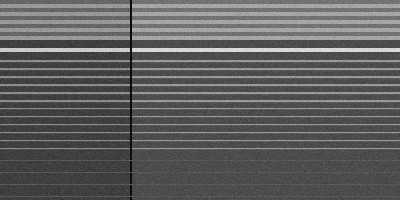
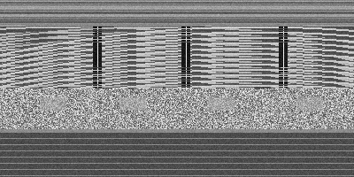
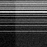
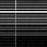
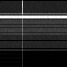
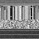
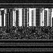
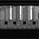
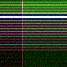
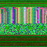

An LLM must never interpret geology from raw pixels. Instead, the image passes through a governed contrast-decomposition pipeline that separates physical truth from display artifact from perceptual bias. The LLM only sees the decomposed channels — never the original image.
Observation − Expectation = Signal.
Each of the 9 attributes isolates a different contrast primitive — a different axis along which the seismic image can surprise the interpreter. When an LLM receives all 9 simultaneously, it does what a good geologist does: decomposes the visual into independent physical channels, checks each for anomalous contrast, and builds a model from the convergence of evidence.
8 physical attributes + 1 governance attribute. The 9th (AC_Risk) is not a physical signal — it is the constitutional firewall that audits the other 8 for display lies. That is the Gödel Lock in visual form: the system that audits itself.
Brightness = energy. Bright zones = strong impedance contrast. Dim zones = gradational or transparent.
Sobel gradient magnitude. Sharp pixel transitions = faults, unconformities, lateral facies boundaries. Skeleton of structural interpretation.
Local variance. High = chaotic (mass transport, fractured). Low = well-layered (shelf, prodelta). Near-zero = transparent (shale, salt, water).
Lateral heterogeneity. Sharp = fault throws. Gradual = progradation / retrogradation. The language of sequence stratigraphy.
Sharpness of acoustic boundaries. Strong = hard boundary (unconformity). Weak = gradational. Alternating = cyclicity. Sequence boundary detection.
Structure tensor within sliding window. Flat = horizontal. Steep = faulted/folded. Converging = syncline/anticline. The structural story.
Peak/trough/zero-crossing identity. Polarity reversals = fluid contact candidates. Separates "picking a reflector" from "understanding what it means."
Depth-dependent resolution. High-freq = well-resolved thin beds. Low-freq = attenuated (deep, gas-charged, or low-Q). Tells the LLM where resolution limits interpretation.
A heatmap showing where display contrast ≠ physical contrast. AC_Risk = Uphys × Dtransform × Bcog. The LLM knows where to trust itself and where to trigger 888_HOLD. Not a physical signal — a constitutional firewall.
PNG/JPG image → geox_contrast_views (modes) → 9 attribute images → geox_vision_perceptual_inventory (LLM input) → arifOS judges
Two synthetic sections that should look geologically different — one a rifted layered shelf (Malay-Basin-style), one a fold-thrust belt (Sabah-style). The pipeline's job is to surface the difference numerically. It does.


| Attribute | Malay Basin (rifted) | Sabah (fold-thrust) | Reading |
|---|---|---|---|
|
amplitude_envelope reflection_strength |
mean 0.407 · p99 0.912 | mean 0.508 · p99 0.926 | Sabah's chaotic + folded zone raises mean; both have bright peaks. |
|
edge_map structural_discontinuity |
mean 0.310 · p99 1.534 | mean 0.345 · p99 1.154 | Malay p99 dominated by single sharp fault. Sabah p99 lower (faults spread out) but mean higher (more total edges). |
|
texture_energy seismic_facies_character |
mean 0.015 · p99 0.090 | mean 0.029 · p99 0.094 | Sabah mean 2× Malay — its chaotic zone + thrust faults create more local variance. |






Yellow = bright + sharp (strong reflector edge). Cyan = bright + chaotic. Magenta = sharp + chaotic. White = all three high.


The Theory of Anomalous Contrast says: Observation − Expectation = Signal. For texture energy, the expected baseline is a layered package (low variance). Anything above that is a disruption signal.
| Region | Geological class | Expected | Measured | ToAC signal |
|---|---|---|---|---|
| Malay — layered Group H/I | layered reflectors | low | 0.01365 | +0.00000 (baseline) |
| Malay — deep Group J/K | transparent / low amp | very low | 0.00102 | −0.01263 (more uniform than baseline) |
| Sabah — fold-thrust system | sharp thrust surfaces | medium-high | 0.04913 | +0.03548 (most disrupted) |
| Sabah — Mass Transport Deposit | chaotic, mixed | high | 0.03005 | +0.01640 (chaotic) |
The signal ordering is correct: deep < layered < MTD < fold-thrust. Thrust faults create sharper local variance than MTD chaos — that is the expected physics.
"The analog that kills you is the one that looks 90% similar but has a fundamentally different charge history or seal mechanism."
The geox_analog_atlas tool enforces this. Aggregate similarity score is shown alongside per-dimension contrast signals. If the score is high BUT multiple dimensions diverge, the tool returns HOLD instead of QUALIFY.
Query: tectonic, basin_age, lithology, depth, reservoir_rock all match a Malay Basin analog. But trap_style (compressional vs tilted fault block) and source_rock (Type I marine vs Group E lacustrine) mismatch.
similarity_score = 0.70
confidence_band = [0.62, 0.78]
high_contrast_dims = 2 (trap_style, source_rock)
dangerous_similarity_flag = YES
Verdict: HOLD. Verdict reason: "1/2 analog(s) hit dangerous-similarity flag. Score is high but multiple high-contrast dimensions exist. Verify with PRIMARY DATA before using."
Without the contrast dimension flag, a downstream well-commitment decision would treat the analog as a direct substitute. The dangerous-similarity flag forces the geologist to verify the two critical mismatches with primary data (logs, seismic, PVT) before substituting.
The same attribute statistics tell the LLM when the input image is not worth interpreting. Flat images return zero signal. Random noise returns maximum signal. Real seismic is in between.
| Image type | edge_map mean | texture_energy mean | Reading |
|---|---|---|---|
| flat uniform (no signal) | 0.0000 | 0.0000 | dead image — tool sees nothing to compute |
| random noise (no signal) | 0.4187 | 0.0817 | high everywhere — low quality, escalate |
| Malay (real, layered) | 0.3098 | 0.0150 | structured but not chaotic |
| Sabah (real, chaotic) | 0.3453 | 0.0288 | structured and disrupted — real signal |
The AC_Risk primitive (Attribute 9) extends this — computing a per-pixel heatmap of where display contrast may be lying about physical contrast. Phase 2 forge.
| Phase | What | Status |
|---|---|---|
| 1.1 | amplitude_envelope, edge_map, texture_energy | SHIPPED |
| 1.2 | horizontal_gradient, vertical_gradient | next |
| 1.3 | local_dip, phase_symmetry | queued |
| 1.4 | frequency_content | queued |
| 2.0 | ac_risk_heatmap (Attribute 9 — the gouvernance layer) | queued |
| 3.0 | LLM composition via vision_perceptual_inventory | integration |
Each phase is a forgeable chunk. Phase 1.1 ships 3 of 9. The remaining 6 follow the same engineering pattern. The forge lives at github.com/ariffazil/geox on branch feat/band-a-raster-pipeline-2026-06-08.
Other seismic-AI systems — SeisCoDE, Geoteric AI Hub, subsurfaceAI — all process pixels. GEOX governs the gap between pixels and truth. No other system on Earth has the AC_Risk heatmap as Attribute 9 of its perceptual pipeline.
The 9th attribute is what makes this GEOX and not just image processing. It is the attribute that watches the other 8 for display lies. The Gödel Lock in visual form: the system that audits itself.